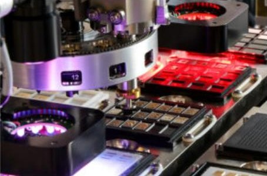

5um Die Bonder
Model：MRSI-705
The MRSI-705 5-Micron Die Bonder sets the mark for high-precision, high-speed component assembly. Engineered for manufacturing robustness, the MRSI-705 is a flexible configurable platform, with the largest installed base in the industry in advanced packaging. Applications are found across a wide range of market segments, such as life & health sciences, aerospace, defense, automotive, lighting, communications, and more.
The MRSI-705 is built to meet the highest standards of reliability and dependability. It starts with an award-winning, industry standard platform with a day-in/day-out accuracy of 5 microns; achieved by leveraging the platform’s signature design features:
- A solid granite platform supports the placement head from above, so that no mechanisms are cantilevered. All of this makes the MRSI-705 thermally and mechanically stable with extremely fast settling times and +/- 5 microns or better placement accuracy, a requirement for critical applications.
- Minimized number of moving mechanical parts.
- The major system X Y axes use zero force, ironless, actively cooled linear motors with high resolution linear encoders. Encoder scales have 0.1-micron resolution for fast, precise, closed-loop positioning. The linear motors deliver faster speeds (acceleration, deceleration and velocity), with better settling times and overall smoother motion.
- Reliability is enhanced through the use of advanced air-bearing technology in the Z axis.
Benefits:
The MRSI-705 produces the following compelling business outcomes for customers:
- Strongest ROIs in the industry – A well-established platform with an unmatched Cost of Ownership. Lifts up overall production efficiency.
- Extended Machine Lifetime – Exceptional performance over time. Upgrade paths as new features are introduced.
- Proven Manufacturing Readiness – A work horse with minimum downtime. Compelling reliability.
- Configurable Asset – The MRSI-705 is an open platform that adapts to changing portfolios. Can handle complex multi-chip modules and other advanced assembly challenges with ease.
New Configuration for Higher Speed & Volume
The MRSI-705 offers an optional Turret configuration to significantly increase the speed and potential volume from our machine without sacrificing flexibility. This feature delivers an “on-the-fly” tool change with up to 12 tools with zero tool changeover downtime. This leads to increased machine efficiency, higher output and lower manufacturing costs. Applications include complex products with multiple chips and processes that require processing of chips with different sizes or epoxy stamping processes, which can significantly improve equipment efficiency.
